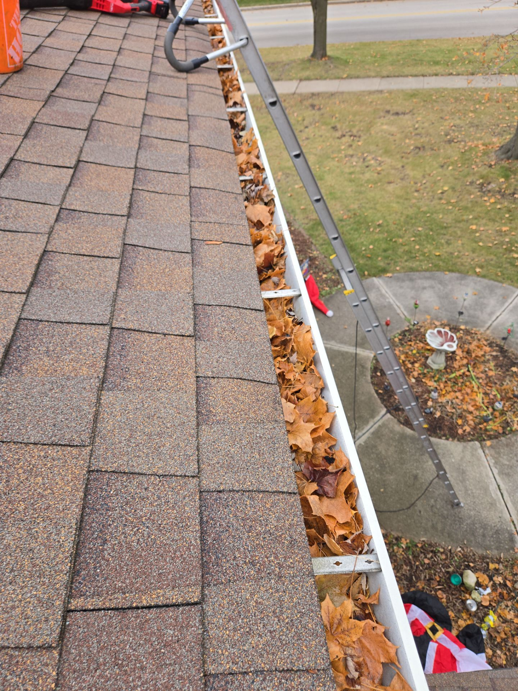
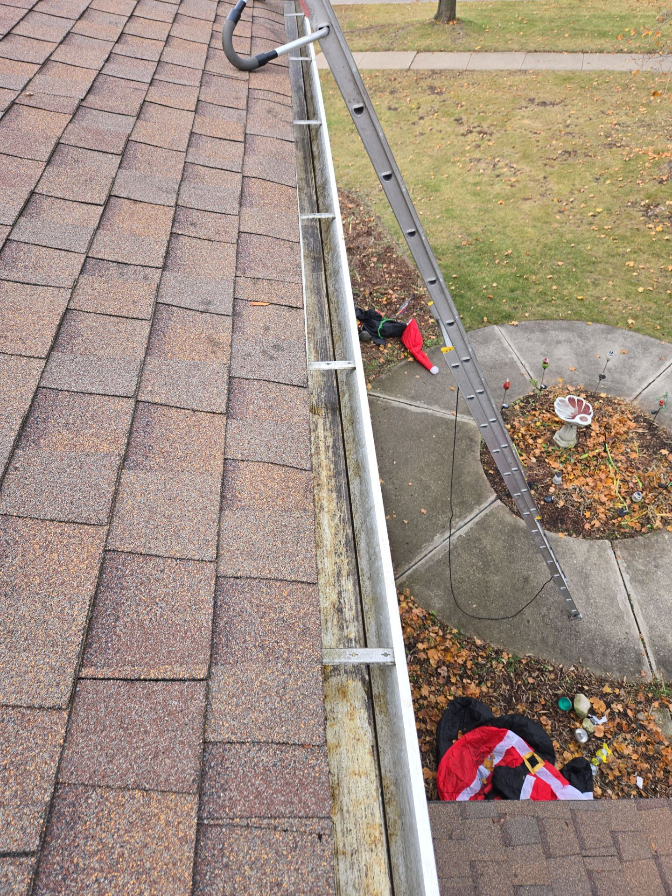

Professional gutter cleaning, guards, repairs & installation in Hartland (Waukesha County). Locally owned, licensed & insured.

Hartland homes face the same challenges as the rest of the Milwaukee metro — mature trees overhead, heavy seasonal debris, and Wisconsin’s freeze-thaw cycles working on every joint and seam. We help Hartland homeowners stay ahead of it with thorough cleanings, honest repair recommendations, and gutter guard options when they make sense.

Complete debris removal, downspout flushing, before/after photos, and a written condition report every time.
Learn MoreLeafblaster Pro & Raindrop Pro guards installed by certified contractors — we recommend the right one for your home.
Learn MoreHanger replacement, downspout extensions, leak sealing — problems diagnosed and fixed before they get worse.
Learn MoreWe serve all of Milwaukee & Waukesha Counties.